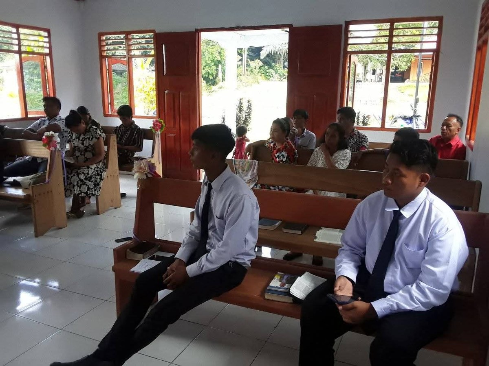
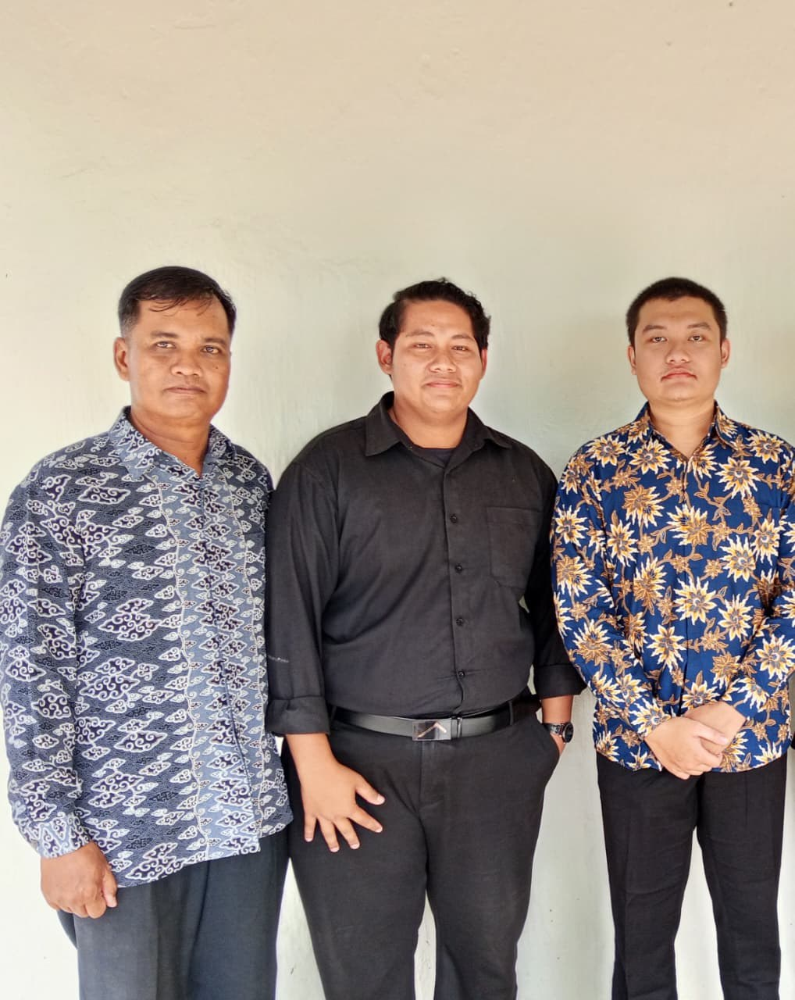
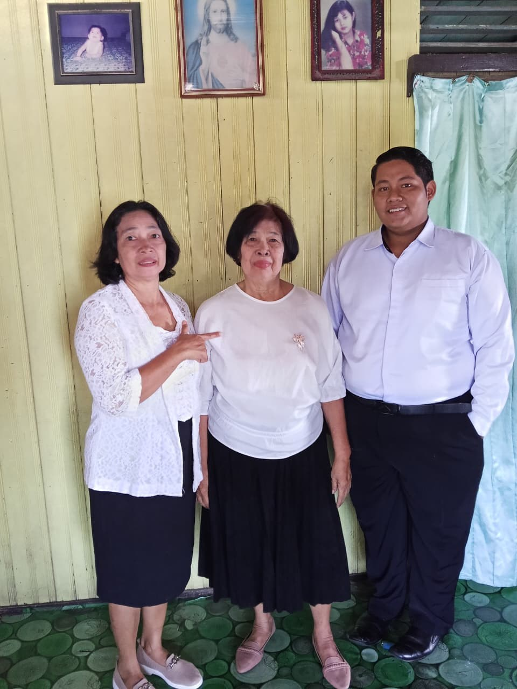
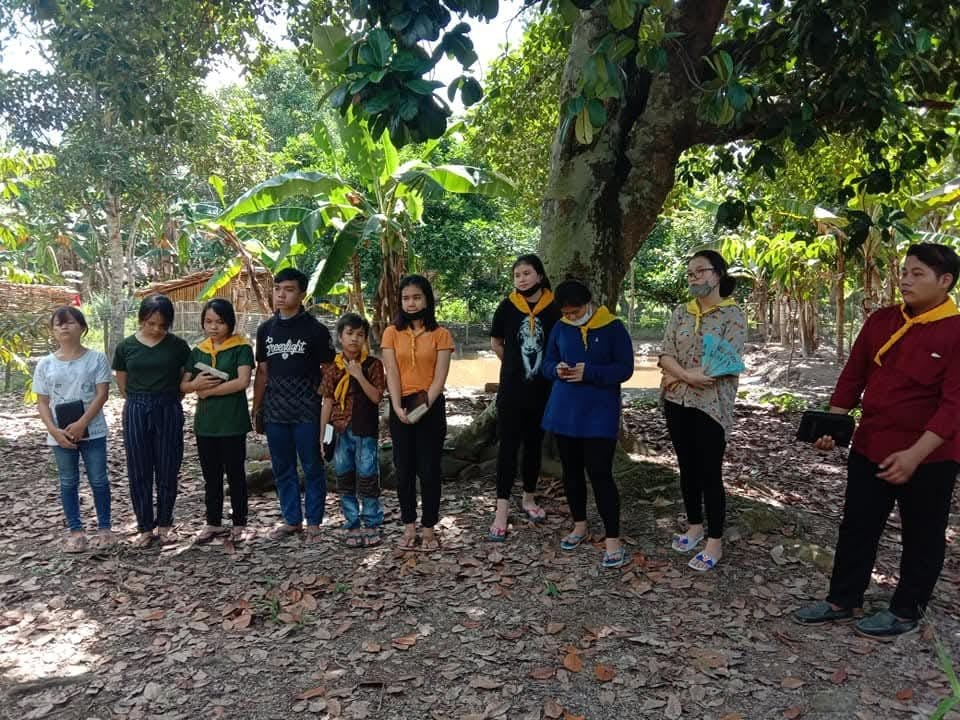

Worship Service
Joining the congregation for worship in a simple, bright church hall.
During my holidays, I prefer to stay active in church service rather than just relaxing. I find deep meaning in participating in worship, youth activities, community service, and fellowship with fellow believers.
These moments of service help me grow spiritually, strengthen friendships, and remind me of the importance of using free time for something meaningful. Here are some memorable moments from my holiday activities.

Joining the congregation for worship in a simple, bright church hall.

A friendly pose with two companions, dressed neatly in batik and formal attire.

A cheerful photo at home with two ladies, all dressed in white and black.

Young people gathering under the trees with Bibles in hand, sharing time in nature and faith.
Taking part in the Sabbath in Jemaat Kuala Kapuas.
A group photo with church members after the Sabbath.
Big smiles, photo taken after the Vesper program.